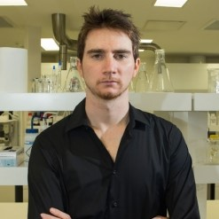
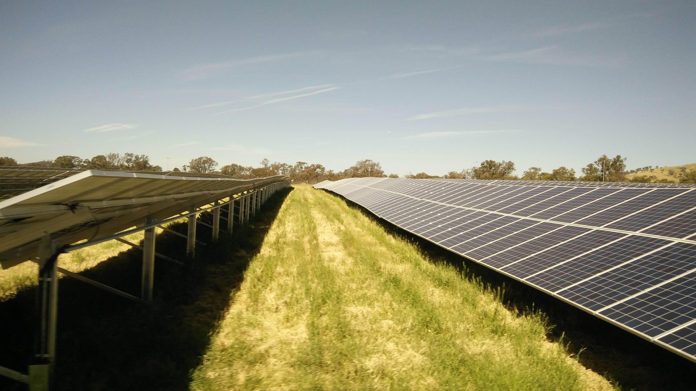
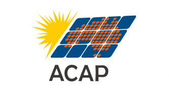

The high efficiency materials and devices team aims to accelerate our energy transition to a zero carbon economy. We combine advanced fabrication and characterisation methods with in-depth modelling to generate the next generation of photovoltaic devices, light-emitters and power-electronic devices.
TEAM

Dr. Fiacre Rougieux
Zhuangyi Zhou
Yalun Cai
Abhinav Sharma
Ryan Hall
RESEARCH
Our research has four major goals:
- To understand the relationship between defect structure and defect properties in photovoltaic materials and describe the impact of defects on the efficiency of solar cells.
- To increase the efficiency of industrial solar cells, by using advanced defects and surface passivation methods as well as novel contacting approaches.
- To develop the next generation of high-efficiency solar cells overcoming the limits of conventional single junction solar cells.
- To develop advanced light-emission and power-electronics devices by exploring novel materials systems and device configurations.
Technologies
We develop and use a range of key technologies including:
- Deep Level Transient Spectroscopy: To measure the recombination parameters of defects in photovoltaic and optoelectronic materials.
- Impedance Spectroscopy: To measure the frequency response of optoelectronci devices and the recombination parameters of defects in optoelectronic materials.
- Lifetime Spectroscopy: To measure the electronic properties of electrons and holes in photovoltaic devices.
- Laser Processing: To enable ablation of thin films, doping of silicon solar cells and recrystallisation of amorphous silicon into polysilicon.
- Photoluminescence spectroscopy: To study the fundamental propoerties of photovoltaic materials and devices.
- Time resolved optical spectroscopy: To investigate the kinetics of ultra-fast processes in new devices.
International collaborators

PUBLICATIONS
2021
- Siriwardhana, Manjula; Zhu, Yan; Hameiri, Ziv; Macdonald, Daniel; Rougieux, Fiacre; Photoconductance Determination of Carrier Capture Cross Sections of Slow Traps in Silicon Through Variable Pulse Filling IEEE Journal of Photovoltaics 2021 IEEE
- Sun, Chang; Zhu, Yan; Juhl, Mattias; Yang, Wenjie; Rougieux, Fiacre; Hameiri, Ziv; Macdonald, Daniel; The Role of Charge and Recombination-Enhanced Defect Reaction Effects in the Dissociation of FeB Pairs in p-Type Silicon under Carrier Injection PHYSICA STATUS SOLIDI-RAPID RESEARCH LETTERS 2021 WILEY-V CH VERLAG GMBH POSTFACH 101161, 69451 WEINHEIM, GERMANY
- Jafari, Saman; Zhu, Yan; Rougieux, Fiacre; De Guzman, Joyce Ann T; Markevich, Vladimir P; Peaker, Anthony R; Hameiri, Ziv; On the Correlation between Light-Induced Degradation and Minority Carrier Traps in Boron-Doped Czochralski Silicon ACS Applied Materials & Interfaces 2021 ACS Publications
2020
- Basnet, Rabin; Weigand, William; Zhengshan, J Yu; Sun, Chang; Phang, Sieu P; Sio, Hang C; Rougieux, Fiacre E; Holman, Zachary C; Macdonald, Daniel; Impact of pre-fabrication treatments on n-type UMG wafers for 21% efficient silicon heterojunction solar cells Solar Energy Materials and Solar Cells 205 110287 2020 North-Holland
- Chen, Daniel; Hamer, Phillip; Kim, Moonyong; Chan, Catherine; nee Wenham, Alison Ciesla; Rougieux, Fiacre; Zhang, Yuchao; Abbott, Malcolm; Hallam, Brett; Hydrogen-induced degradation: Explaining the mechanism behind light-and elevated temperature-induced degradation in n-and p-type silicon Solar Energy Materials and Solar Cells 207 110353 2020 Elsevier
- Raj, Vidur; Rougieux, Fiacre; Fu, Lan; Tan, Hark Hoe; Jagadish, Chennupati; Design of Ultrathin InP Solar Cell Using Carrier Selective Contacts IEEE Journal of Photovoltaics 10 6 1657-1666 2020 IEEE
- Rougieux, Fiacre E; Sun, Chang; Juhl, Mattias; Light-induced-degradation defect independent of the boron concentration: Towards unifying admittance spectroscopy, photoluminescence and photoconductance lifetime spectroscopy results Solar Energy Materials and Solar Cells 210 110481 2020 Elsevier
- Basnet, Rabin; Phang, Sieu Pheng; Sun, Chang; Rougieux, Fiacre E; Macdonald, Daniel; Onset of ring defects in n-type Czochralski-grown silicon wafers Journal of Applied Physics 127 15 153101 2020 AIP Publishing LLC
- Chen, Daniel; Kim, Moonyong; Shi, Jianwei; Yu, Zhengshan Jason; Leilaeioun, Ashling Mehdi; Liu, Shaoyang; Stefani, Bruno Vicari; Weigand, William; Wright, Matthew; Soeriyadi, Anastasia; Record Voltages using Commercial-grade Silicon Wafers: An Assessment of the Impacts of Defect Engineering for p-type Silicon Heterojunction Solar Cells
- Chen, Daniel; Chen, Ran; Rougieux, Fiacre; Ciesla, Alison; Chan, Catherine; Liu, Shaoyang; Kim, Moonyong; Abbott, Malcolm; Wenham, Stuart; Hallam, Brett; New Insights into Hydrogen Induced Degradation: A study on n-and p-type Silicon Sol. Energy Mater. Sol. Cells 172 293-300
- Jafari, Saman; Zhu, Yan; Rougieux, Fiacre; Hameiri, Ziv; Trapping in multi-crystalline silicon wafers: The impact of firing and laser treatment
- Sun, Chang; Zhu, Yan; Juhl, Mattias; Yang, Wenjie; Rougieux, Fiacre; Hameiri, Ziv; Macdonald, Daniel; The Role of Charge and Recombination‐Enhanced‐Defect‐Reaction Effects in the Dissociation of Feb Pairs in P‐Type Silicon Under Injection physica status solidi (RRL)–Rapid Research Letters Wiley Online Library
- Siriwardhana, Manjula; Rougieux, Fiacre E; Macdonald, Daniel; Defect luminescence from thermal donors in silicon: impact of dopant type and thermal donor concentration 2020 47th IEEE Photovoltaic Specialists Conference (PVSC) 2652-2654 2020 IEEE
- Zhu, Yan; Rougieux, Fiacre; Grant, Nicholas E; De Guzman, Joyce Ann T; Murphy, John D; Markevich, Vladimir P; Coletti, Gianluca; Peaker, Anthony R; Hameiri, Ziv; Electrical Characterization of Thermally Activated Defects in n-Type Float-Zone Silicon IEEE Journal of Photovoltaics 11 1 26-35 2020 IEEE
- Basnet, Rabin; Sio, Hang; Siriwardhana, Manjula; Rougieux, Fiacre E; Macdonald, Daniel; Ring‐Like Defect Formation in N‐Type Czochralski‐Grown Silicon Wafers during Thermal Donor Formation physica status solidi (a) 2020
- Rougieux, Fiacre; Sun, Chang; Juhl, Mattias; The Boron-Oxygen Defect: Does its Concentration Really Depends on the Boron/Dopant Concentration? 2020 47th IEEE Photovoltaic Specialists Conference (PVSC) 2522-2524 2020 IEEE
- Jafari, Saman; Zhu, Yan; Rougieux, Fiacre; De Guzman, Joyce Ann T; Markevich, Vladimir P; Peaker, Anthony R; Hameiri, Ziv; Boron-oxygen related light-induced degradation of Si solar cells: Transformation between minority carrier traps and recombination active centers 2020 47th IEEE Photovoltaic Specialists Conference (PVSC) 0689-0692 2020 IEEE
2019
- Sun, Chang; Chen, Daniel; Rougieux, Fiacre; Basnet, Rabin; Hallam, Brett; Macdonald, Daniel; Kinetics and dynamics of the regeneration of boron-oxygen defects in compensated n-type silicon Solar Energy Materials and Solar Cells 195 174-181 2019 Elsevier
- Zhu, Yan; Rougieux, Fiacre; Grant, Nicholas; Mullins, Jack; De Guzman, Joyce Ann; Murphy, John D; Markevich, Vladimir P; Coletti, Gianluca; Peaker, Anthony R; Hameiri, Ziv; New insights into the thermally activated defects in n-type float-zone silicon AIP Conference Proceedings 2147 1 140014 2019 AIP Publishing
- Rougieux, Fiacre E; Kwapil, Wolfram; Heinz, Friedemann; Siriwardhana, Manjula; Schubert, Martin C; Contactless transient carrier spectroscopy and imaging technique using lock-in free carrier emission and absorption Scientific Reports 9 1 1-May 2019 Nature Publishing Group Juhl, Mattias Klaus; Heinz, Friedemann D; Coletti, Gianluca; Rougieux, FE; Sun, C; Niewelt, T; Krich, JJ; MacDonald, D; Schubert, MC; Insights on the electronic parameterisation of defects in silicon obtained from the formation of the defect repository 36th European Photovoltaic Solar Energy Conference and Exhibition, Marseille, France, 1-4 2019
2018
- Basnet, Rabin; Rougieux, Fiacre E; Sun, Chang; Phang, Sieu P; Samundsett, Chris; Einhaus, Roland; Degoulange, Julien; Macdonald, Daniel; Methods to Improve Bulk Lifetime in n-Type Czochralski-Grown Upgraded Metallurgical-Grade Silicon Wafers IEEE Journal of Photovoltaics 8 4 990-996 2018 IEEE
- Raj, Vidur; dos Santos, Tâmara Sibele; Rougieux, Fiacre; Vora, Kaushal; Lysevych, Mykhaylo; Fu, Lan; Mokkapati, Sudha; Tan, Hark Hoe; Jagadish, Chennupati; Indium phosphide based solar cell using ultra-thin ZnO as an electron selective layer Journal of Physics D: Applied Physics 51 39 395301 2018 IOP Publishing
- Rougieux, Fiacre E; Sun, Chang; Macdonald, Daniel; Determining the charge states and capture mechanisms of defects in silicon through accurate recombination analyses: A review Solar Energy Materials and Solar Cells 187 263-272 2018 Elsevier
- Juhl, Mattias K; Heinz, Friedemann D; Coletti, Gianluca; Macdonald, Daniel; Rougieux, Fiacre E; Schindle, Florian; Niewelt, Tim; Schubert, Martin C; An Open Source Based Repository For Defects in Silicon 2018 IEEE 7th World Conference on Photovoltaic Energy Conversion (WCPEC)(A Joint Conference of 45th IEEE PVSC, 28th PVSEC & 34th EU PVSEC) 0328-0332 2018 IEEE
- Rougieux, Fiacre E; Sun, Chang; Zhu, Yan; Macdonald, Daniel H; Accurate defect recombination parameters: what are the limitations of current analyses? 2018 IEEE 7th World Conference on Photovoltaic Energy Conversion (WCPEC)(A Joint Conference of 45th IEEE PVSC, 28th PVSEC & 34th EU PVSEC) 2520-2523 2018 IEEE
- Siriwardhana, Manjula; Macdonald, D; Heinz, FD; Rougieux, FE; Slow minority carrier trapping and de-trapping in Czochralski silicon: Influence of thermal donors and the doping density 2018 IEEE 7th World Conference on Photovoltaic Energy Conversion (WCPEC)(A Joint Conference of 45th IEEE PVSC, 28th PVSEC & 34th EU PVSEC) 3312-3314 2018 IEEE
- Basnet, Rabin; Weigand, William; Zhengshan, J Yu; Sun, Chang; Phang, Sieu P; Rougieux, Fiacre E; Einhaus, Roland; Degoulange, Julien; Holman, Zachary; Macdonald, Daniel; Impact of Tabula Rasa and Phosphorus Diffusion Gettering on 21% Heterojunction Solar Cells Based on n-Type Czochralski-Grown Upgrade Metallurgical-Grade Silicon 2018 IEEE 7th World Conference on Photovoltaic Energy Conversion (WCPEC)(A Joint Conference of 45th IEEE PVSC, 28th PVSEC & 34th EU PVSEC) 1687-1691 2018 IEEE
- Basnet, Rabin; Sun, Chang; Wu, Huiting; Nguyen, Hieu T; Rougieux, Fiacre Emile; Macdonald, Daniel; Ring defects in n-type Czochralski-grown silicon: A high spatial resolution study using Fourier-transform infrared spectroscopy, micro-photoluminescence, and micro-Raman Journal of Applied Physics 124 24 243101 2018 AIP Publishing
2017
- Zheng, Peiting; Rougieux, Fiacre Emile; Zhang, Xinyu; Degoulange, Julien; Einhaus, Roland; Rivat, Pascal; Macdonald, Daniel H; 21.1% UMG Silicon Solar Cells IEEE Journal of Photovoltaics 7 1 58-61 2017 IEEE
- Sun, Chang; Nguyen, Hieu T; Rougieux, Fiacre E; Macdonald, Daniel; Precipitation of Cu and Ni in n-and p-type Czochralski-grown silicon characterized by photoluminescence imaging Journal of Crystal Growth 460 98-104 2017 North-Holland
- Rougieux, Fiacre E; Nguyen, Hieu T; Macdonald, Daniel H; Mitchell, Bernhard; Falster, Robert; Growth of Oxygen Precipitates and Dislocations in Czochralski Silicon IEEE Journal of Photovoltaics 7 3 735-740 2017 IEEE
- Sun, Chang; Nguyen, Hieu Trong; Sio, Hang Cheong; Rougieux, Fiacre Emile; Macdonald, Daniel; Activation Kinetics of the Boron–oxygen Defect in Compensated n-and p-type Silicon Studied by High-Injection Micro-Photoluminescence IEEE Journal of Photovoltaics 7 4 988-995 2017 IEEE
- Shen, Daniel; Sun, Chang; Zheng, Peiting; Macdonald, Daniel; Rougieux, Fiacre; Carrier induced degradation in compensated n-type silicon solar cells: Impact of light-intensity, forward bias voltage, and temperature on the reaction kinetics Japanese Journal of Applied Physics 56 8 08MB23 2017
2016
- Grant, Nicholas E; Rougieux, Fiacre E; Macdonald, Daniel; Low temperature activation of grown-in defects limiting the lifetime of high purity n-type float-zone silicon wafers Solid State Phenomena 242 120-125 2016 Trans Tech Publications
- Nguyen, Hieu T; Rougieux, Fiacre E; Yan, Di; Wan, Yimao; Mokkapati, Sudha; de Nicolas, Silvia Martin; Seif, Johannes Peter; De Wolf, Stefaan; Macdonald, Daniel; Characterizing amorphous silicon, silicon nitride, and diffused layers in crystalline siliconsolarcellsusingmicro-photoluminescence spectroscopy Solar Energy Materials and Solar Cells 145 403-411 2016 North-Holland
- Rougieux, Fiacre; Samundsett, Christian; Fong, Kean Chern; Fell, Andreas; Zheng, Peiting; Macdonald, Daniel; Degoulange, Julien; Einhaus, Roland; Forster, Maxime; High efficiency UMG silicon solar cells: impact of compensation on cell parameters Progress in Photovoltaics: Research and Applications 24 5 725-734 2016
- Zheng, P; Rougieux, FE; Samundsett, C; Yang, Xinbo; Wan, Yimao; Degoulange, J; Einhaus, R; Rivat, P; Macdonald, D; Upgraded metallurgical-grade silicon solar cells with efficiency above 20% Applied Physics Letters 108 12 122103 2016 AIP Publishing
- Grant, Nicholas E; Markevich, Vladimir P; Mullins, Jack; Peaker, Anthony R; Rougieux, Fiacre; Macdonald, Daniel; Thermal activation and deactivation of grown‐in defects limiting the lifetime of float‐zone silicon physica status solidi (RRL)-Rapid Research Letters 10 6 443-447 2016 WILEY‐VCH Verlag Berlin GmbH
- Grant, Nicholas E; Markevich, Vladimir P; Mullins, Jack; Peaker, Anthony R; Rougieux, Fiacre; Macdonald, Daniel; Murphy, John D; Permanent annihilation of thermally activated defects which limit the lifetime of float‐zone silicon physica status solidi (a) 213 11 2844-2849 2016
- Sun, Chang; Rougieux, Fiacre E; Degoulange, Julien; Einhaus, Roland; Macdonald, Daniel; Reassessment of the recombination properties of aluminium–oxygen complexes in n‐and p‐type Czochralski‐grown silicon physica status solidi (b) 253 10 2079-2084 2016
- Zheng, Peiting; Rougieux, Fiacre E; Samundsett, Chris; Yang, Xinbo; Wan, Yimao; Degoulange, Julien; Einhaus, Roland; Rivat, Pascal; Macdonald, Daniel; Simulation of 20.96% Efficiency n-type Czochralski UMG Silicon Solar Cell Energy Procedia 92 434-442 2016
- Sun, Chang; Nguyen, Hieu T; Rougieux, Fiacre E; Macdonald, Daniel; Characterization of Cu and Ni Precipitates in n–and p-type Czochralski-grown Silicon by Photoluminescence Energy Procedia 92 880-885 2016 Elsevier
2015
- Zheng, Peiting; Rougieux, FE; Grant, NE; MacDonald, Daniel; Evidence for vacancy-related Recombination Active Defects in as-grown n-type Czochralski Silicon IEEE Journal of Photovoltaics 5 1 183-188 2015 IEEE
- Sun, Chang; Rougieux, Fiacre E; Macdonald, Daniel; A unified approach to modelling the charge state of monatomic hydrogen and other defects in crystalline silicon Journal of Applied Physics 117 4 45702 2015 AIP Publishing
- Grant, NE; Rougieux, FE; Macdonald, D; Bullock, J; Wan, Y; Grown-in defects limiting the bulk lifetime of p-type float-zone silicon wafers Journal of Applied Physics 117 5 55711 2015 AIP Publishing
- Nguyen, Hieu T; Rougieux, Fiacre E; Wang, Fan; Tan, Hoe; Macdonald, Daniel; Micrometer-scale deep-level spectral photoluminescence from dislocations in multicrystalline silicon IEEE Journal of Photovoltaics 5 3 799-804 2015 IEEE
- Nguyen, Hieu T; Rougieux, Fiacre E; Wang, Fan; Macdonald, Daniel; Effects of solar cell processing steps on dislocation luminescence in multicrystalline silicon Energy Procedia 77 619-625 2015 Elsevier
- Sun, Chang; Liu, AnYao; Rougieux, Fiacre E; Macdonald, Daniel; Lifetime Spectroscopy and Hydrogenation of Chromium in n-and p-type Cz Silicon Energy Procedia 77 646-650 2015 Elsevier
- Sun, Chang; Liu, AnYao; Phang, Sieu Pheng; Rougieux, Fiacre E; Macdonald, Daniel; Charge states of the reactants in the hydrogen passivation of interstitial iron in P-type crystalline silicon Journal of Applied Physics 118 8 85709 2015 AIP Publishing
- Macdonald, Daniel; Liu, AnYao; Nguyen, Hieu T; Lim, Siew Yee; Rougieux, Fiacre E; Physical modelling of luminescence spectra from crystalline silicon 31st European Photovoltaic Solar Energy Conference and Exhibition, Hamburg, Germany 2015
- Rougieux, Fiacre E; Grant, Nicholas E; Macdonald, Daniel; Murphy, John D; Can vacancies and their complexes with nonmetals prevent the lifetime reaching its intrinsic limit in silicon? 2015 IEEE 42nd Photovoltaic Specialist Conference (PVSC) 1-Apr 2015 IEEE
2014
- Forster, Maxime; Wagner, Pierre; Degoulange, Julien; Einhaus, Roland; Galbiati, Giuseppe; Rougieux, Fiacre Emile; Cuevas, Andrés; Fourmond, Erwann; Impact of compensation on the boron and oxygen-related degradation of upgraded metallurgical-grade silicon solar cells Solar Energy Materials and Solar Cells 120 390-395 2014 North-Holland
- Zheng, Peiting; Rougieux, FE; MacDonald, Daniel; Cuevas, Andres; Measurement and Parameterization of Carrier Mobility Sum in Silicon as a Function of Doping, Temperature and Injection Level IEEE Journal of Photovoltaics 4 2 560-565 2014 IEEE
- Nguyen, Hieu T; Rougieux, Fiacre E; Mitchell, Bernhard; Macdonald, Daniel; Temperature dependence of the band-band absorption coefficient in crystalline silicon from photoluminescence Journal of Applied Physics 115 4 43710 2014 AIP Publishing
- Hameiri, Ziv; Rougieux, Fiacre; Sinton, Ron; Trupke, Thorsten; Contactless determination of the carrier mobility sum in silicon wafers using combined photoluminescence and photoconductance measurements Applied Physics Letters 104 7 73506 2014 AIP Publishing
- Rougieux, FE; Macdonald, D; Reading data stored in the state of metastable defects in silicon using band-band photoluminescence: Proof of concept and physical limits to the data storage density Applied Physics Letters 104 12 124103 2014 AIP Publishing
- Sun, Chang; Rougieux, Fiacre E; Macdonald, Daniel; Reassessment of the recombination parameters of chromium in n-and p-type crystalline silicon and chromium-boron pairs in p-type crystalline silicon Journal of Applied Physics 115 21 214907 2014 AIP Publishing
- Nguyen, Hieu T; Rougieux, Fiacre E; Baker-Finch, Simeon C; Macdonald, Daniel; Impact of carrier profile and rear-side reflection on photoluminescence spectra in planar crystalline silicon wafers at different temperatures IEEE Journal of Photovoltaics 5 1 77-81 2014 IEEE
- Zheng, P; Rougieux, FE; Macdonald, D; Cuevas, A; Parameterization of carrier mobility sum in silicon as a function of doping, temperature and injection level: Extension to p-type silicon Photovoltaic Specialist Conference (PVSC), 2014 IEEE 40th 0129-0134 2014 IEEE
- Rougieux, Fiacre E; Grant, Nicholas E; Barugkin, Chog; Macdonald, Daniel; Murphy, John D; Influence of annealing and bulk hydrogenation on lifetime-limiting defects in nitrogen-doped floating zone silicon IEEE Journal of Photovoltaics 5 2 495-498 2014 IEEE
- Rougieux, FE; Grant, NE; Macdonald, D; Impact of grown-in point-defects on the minority carrier lifetime in Czochralski-grown silicon wafers Energy Procedia 60 81-84 2014 Elsevier
2013
- Forster, M; Rougieux, FE; Cuevas, A; Dehestru, B; Thomas, A; Fourmond, E; Lemiti, M; Incomplete ionization and carrier mobility in compensated p-type and n-type silicon Photovoltaics, IEEE Journal of 3 1 108-113 2013 IEEE
- Rougieux, FE; Grant, NE; Macdonald, D; Thermal deactivation of lifetime‐limiting grown‐in point defects in n‐type Czochralski silicon wafers physica status solidi (RRL)-Rapid Research Letters 7 9 616-618 2013 WILEY‐VCH Verlag
- Lim, SY; Rougieux, FE; Macdonald, D; Boron-oxygen defect imaging in p-type Czochralski silicon Applied Physics Letters 103 9 92105 2013 AIP Publishing
2012
- Forster, M; Cuevas, A; Fourmond, E; Rougieux, FE; Lemiti, M; Impact of incomplete ionization of dopants on the electrical properties of compensated p-type silicon Journal of Applied Physics 111 4 43701 2012 AIP Publishing
- Cuevas, Andrés; Forster, Maxime; Rougieux, Fiacre; Macdonald, Daniel; Compensation Engineering for Silicon Solar Cells Energy Procedia 15 67-77 2012 Elsevier
- Forster, M; Fourmond, E; Rougieux, FE; Cuevas, A; Gotoh, R; Fujiwara, K; Uda, S; Lemiti, M; Boron-oxygen defect in Czochralski-silicon co-doped with gallium and boron Applied Physics Letters 100 4 42110 2012 AIP Publishing
- Macdonald, D; Phang, SP; Rougieux, FE; Lim, SY; Paterson, D; Howard, DL; de Jonge, MD; Ryan, CG; Iron-rich particles in heavily contaminated multicrystalline silicon wafers and their response to phosphorus gettering Semiconductor Science and Technology 27 12 125016 2012 IOP Publishing
- Grant, Nicholas E; McIntosh, Keith R; Tan, J; Rougieux, Fiacre; Bullock, James; Wan, Yimao; Barugkin, Chog; Light Enhanced Hydrofluoric Acid Passivation for Evaluating Silicon Bulk Lifetimes 28th European Photovoltaic Solar Energy Conference and Exhibition 1-Mar 2012
- Rougieux, Fiacre Emile; Impact of Dopant Compensation on the Electrical Properties of Silicon for Solar Cells Applications 2012 Australian National University
2011
- Rougieux, FE; Macdonald, D; Cuevas, A; Transport properties of p‐type compensated silicon at room temperature Progress in Photovoltaics: Research and Applications 19 7 787-793 2011 Wiley Online Library
- Tan, J; Macdonald, D; Rougieux, F; Cuevas, A; Accurate measurement of the formation rate of iron–boron pairs in silicon Semiconductor Science and Technology 26 5 55019 2011 IOP Publishing
- Rougieux, FE; Lim, B; Schmidt, J; Forster, M; Macdonald, D; Cuevas, A; Influence of net doping, excess carrier density and annealing on the boron oxygen related defect density in compensated n-type silicon Journal of Applied Physics 110 6 63708 2011 AIP Publishing
- Rougieux, Fiacre E; Thiboust, Matthieu; Grant, Nicholas; Tan, Jason; Macdonald, Daniel; Cuevas, Andres; Contactless determination of the injection dependent carrier mobility sum in silicon 2011 37th IEEE Photovoltaic Specialists Conference 002928-002928 2011 IEEE
- Rougieux, FE; Forster, Maxime; MacDonald, Daniel; Cuevas, Andres; Lim, Bianca; Schmidt, Jan; Recombination activity and impact of the boron–oxygen-related defect in compensated n-type silicon IEEE Journal of Photovoltaics 1 1 54-58 2011 IEEE
- Rougieux, Fiacre E; Zheng, Peiting; Thiboust, Matthieu; Tan, Jason; Grant, Nicholas E; Macdonald, Daniel H; Cuevas, Andres; A contactless method for determining the carrier mobility sum in silicon wafers IEEE Journal of Photovoltaics 2 1 41-46 2011 IEEE
- Rougieux, Fiacre E; Macdonald, Daniel; Cuevas, Andres; Lim, Bianca; Schmidt, Jan; Formation kinetics and extent of the boron oxygen defect in compensated n-type silicon 2011 37th IEEE Photovoltaic Specialists Conference 003424-003424 2011 IEEE
2010 and before

TEACHING
Solar Cells
After completing this course, students are able to design and optmise basic cell designs and perform loss analysis.
Follow our solar cell teaching website here.
Applied Photovoltaics
This course gives students the skills necessary to design a stand-alone PV Systems compliant with the Australian Standards.
FUNDING

POSITIONS
PhD and Honors Students
We are always looking for talented PhD and honors students interested to join our team. Please contact us with your CV and academic transcript.